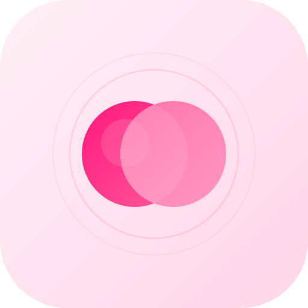

Tokens, typography, and components for PitGPT — the personal experiment engine. Built for clarity, speed, and confidence.
The primary logo is a venn diagram of two overlapping circles on a rounded-square container. The overlap represents A/B comparison — the core concept of every N-of-1 trial. Use this version for app icons, social assets, and any context where the logo appears standalone at 64px or larger.

logo.svg — 512×512 with rx=112 rounded square. Minimum display size: 32px.A stripped-down version of the mark used in the app sidebar and mobile header. No container square, no glow rings — just the two overlapping circles. Designed to read clearly at 28–34px and sit tight against the wordmark.
50 120 410 270 — circles at cx 200/312, r=115. Sidebar renders at 30px, mobile at 26px. Gap to wordmark: 6px.#FFF0F6#FFD6E8#FFB3D9#FF80B5#FF4D94#FF006E#D4005C#A80049#7D0037#520024#FFF#FAFAFA#F5F5F5#E5E5E5#D4D4D4#737373#404040#171717#0A0A0A#16A34A#CA8A04#DC2626#2563EBPrimary for the single most important action per view. Max one primary per screen.
Hover + keyboard focus. Pink highlight on interaction. role="tooltip" + aria-label.
Compare two products over 6 weeks with daily check-ins and randomized scheduling.
Focus ring shifts to pink. Mirrors ChatGPT's centered minimal input.
Day 14 of 42
One typeface. One accent color. Strip away everything that doesn't earn its place. The interface disappears so the science becomes obvious.
Show the answer first, then the evidence, then the methodology. Statistical details live behind (i) tooltips — accessible but never in the way.
Always show confidence intervals, not just point estimates. Always show caveats, not just results. Designed to prevent overconfidence in personal data.
You don't "configure an experiment" — you ask a question. The system meets you where you are and handles the science behind the scenes.